每张手机画面均为 390 × 844，来自当前主线的真实原型及其组件；“new” 只在本画布脚本中用现有 SentriUI 部件拼出，尚未进入原型或 Atlas。这里先展示差异与建议，待负责人同意再同步。
Atlas 中 5 个 screen 的 “Actions” 先点中房间底栏；母猪记录中的 Actions 才是这些 screen 描述的入口。
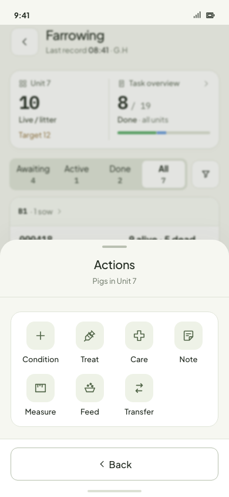
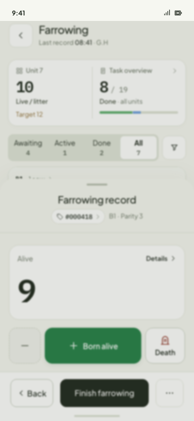
同一原型的 pen note 与 Inspection 的 pig note 已有 7 天 Show for；母猪 Note 仍是旧表单。
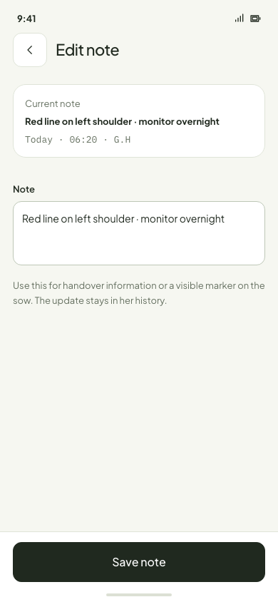
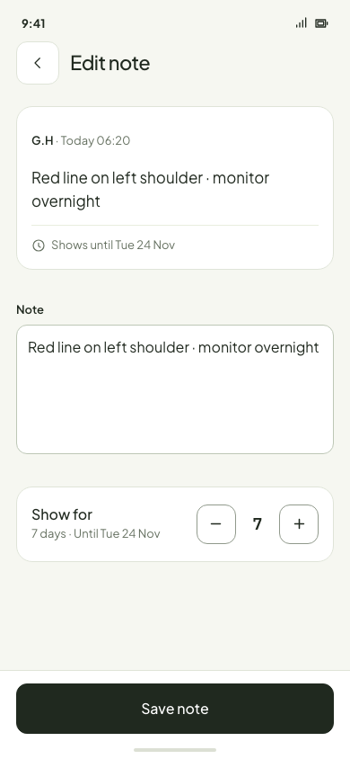
从死亡或完成母猪的记录进入 Piglets，是 11 月 3 日批准的 Row 选择面；从 Actions → Piglet processing 进入的 Piglet records 仍是旧页面。
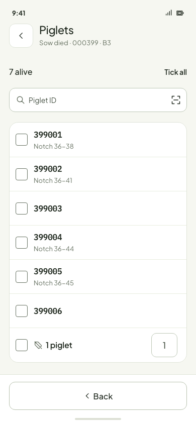
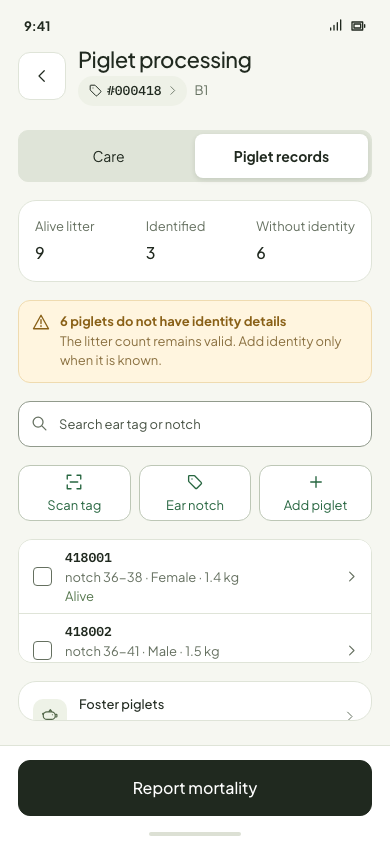
母猪记录的 Record dead 已有七个原因；旧 Piglet records 的 Report mortality 另有原因选择，且保存映射会把 Other/未知原因算成 Put down。
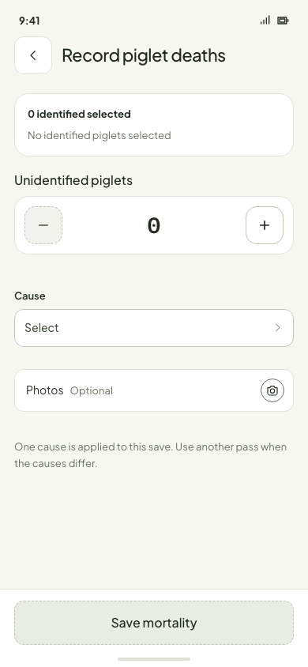
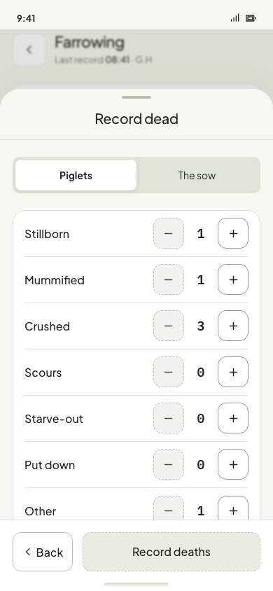
11 月 3 日的规则让 Born 在 Finish 后冻结、Undo 只在 Farrowing log；Actions 里的 Reconcile 仍能直接保存一个新 Alive 数。
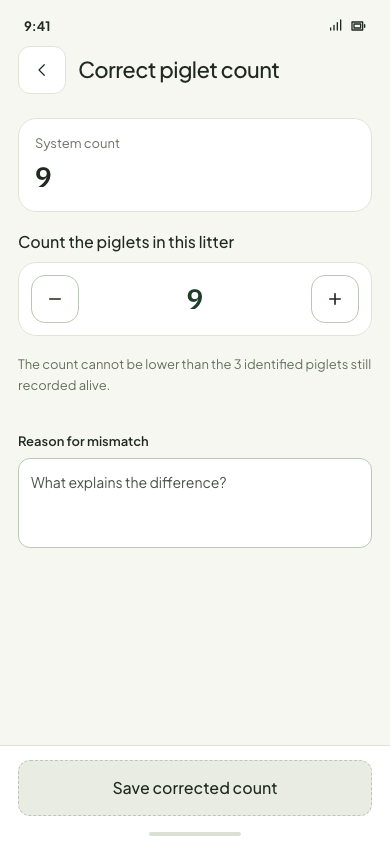
saveCountReconcile()
frozen
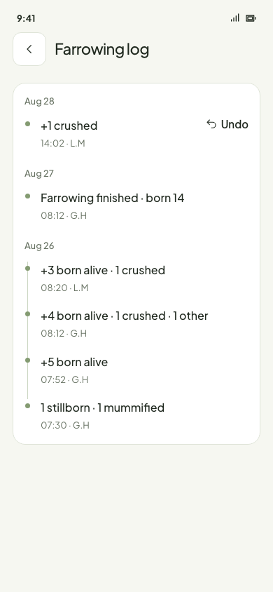
farrowing.task-outcomes 的当前 preset 仍有 8 头 Awaiting 母猪，所以实际运行态是 task-ready；这是 66 页逐页重放发现的错配。
farrowing.task-outcomes
task-ready
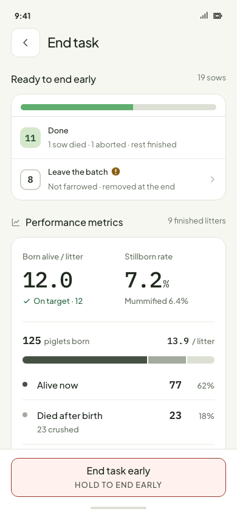
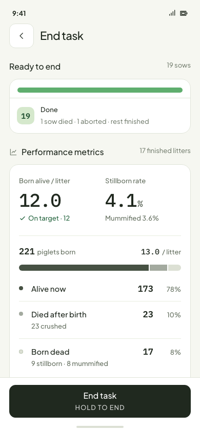
Atlas 的 farrowing.death-breakdown 仍尝试点 “Death causes”，但完成记录已无该控件；新版 Details 直接写出各死因。
farrowing.death-breakdown
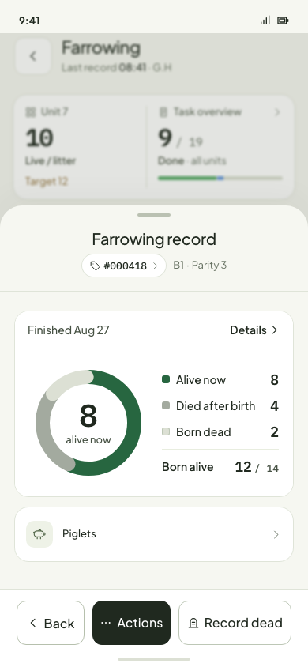
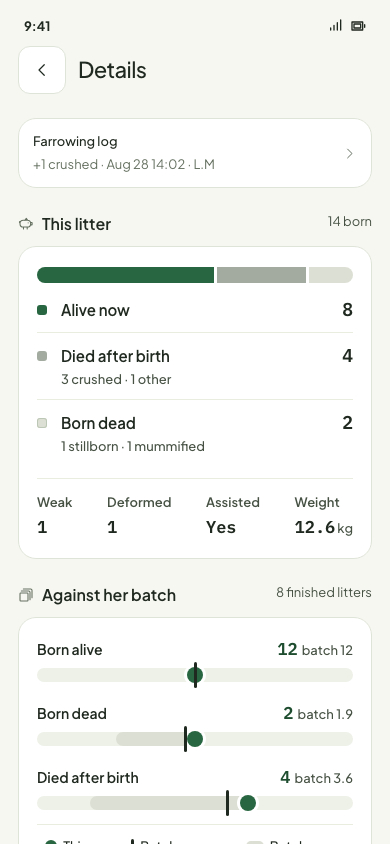
feature.json
farrowing.foster-count
.foster-send